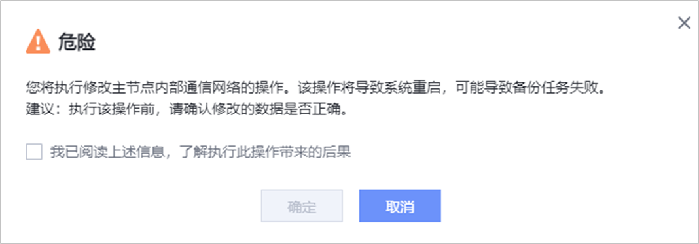

如果您需要修改节点内部通信网络，请参考本节操作。
注意事项
- 如果已经组成了备份集群，且修改后的所有成员节点的内部通信网络与主节点的内部通信网络在同一网段，则直接修改成员节点的内部通信网络。如果修改后的成员节点的内部通信网络与主节点的内部通信网络不在同一网段，那么必须先完成成员节点内部通信网络的修改后再去修改主节点的内部通信网络，否则修改成员节点未修改主节点会导致成员节点离线。
- 如果已经组成了备份集群，且配置了HA成员，备节点的内部通信网络不支持直接修改。如需修改备节点的内部通信网络请参见移除HA成员将备节点移除HA成员后进行修改，修改完成后再参见添加HA成员添加HA成员恢复主备状态。
- 如果内部通信网络不通，修改主节点内部通信网络前，须先完成成员节点内部通信网络的修改。然后登录各成员节点的DeviceManager管理界面后，检查其内部通信网络对应的逻辑端口已创建再修改主节点。检查方法如下：
- 登录DeviceManager管理界面。
- 选择“服务 > 网络 > 逻辑端口”。
- 检查成员节点内部通信网络对应的逻辑端口是否已创建。
操作步骤
- 选择。
- 选择“备份集群”。
- 在待修改的节点所在行右侧选择。
- 配置内部通信网络。
相关参数请参见表1。
表1 内部通信网络参数说明 参数
说明
IP地址类型
取值为“IPv4”或“IPv6”。
子网掩码
内部通信网络的IPv4地址的子网掩码。
说明：当“IP地址类型”为“IPv4”时，该参数才能显示。
前缀
内部通信网络的IPv6地址的前缀。
说明：当“IP地址类型”为“IPv6”时，该参数才能显示。
IP地址1
用户自定义的内部通信网络IP地址1，作为内部数据库的IP地址。请确保该地址未与其他IP地址重复，否则会导致IP网络冲突。
IP地址2
用户自定义的内部通信网络IP地址2，作为内部基础设施的IP地址。请确保该地址未与其他IP地址重复，否则会导致IP网络冲突。
网关
内部通信网络的网关。
是否使用VLAN
默认不勾选。勾选前请确认业务已配置VLAN，勾选后，配置的业务端口会应用于VLAN。
VLAN ID
选择“是否使用VLAN”后，需要输入该参数。该ID为用户配置VLAN的同时自定义的新增ID。
VLAN ID取值范围为1~4094；VLAN ID可以是一个或多个，多个ID间使用英文逗号分隔。
端口类型
可选“以太网端口”或“绑定端口”。
- 选择端口类型后，可在“可选端口”区域选择业务端口。用户可选中单个和多个端口来配置业务端口，在“已选端口”区域，可在需要移除的端口所在行单击
 图标，将单个端口从“已选端口”区域移除，或者单击“全部删除”移除“已选端口”区域的所有端口。
图标，将单个端口从“已选端口”区域移除，或者单击“全部删除”移除“已选端口”区域的所有端口。选择端口类型后，可做的选项如下：
- 端口选择：可选择“创建新端口”或“复用当前已配置端口”。
- 共享端口（可选）：当“端口类型”选择“绑定端口”时存在该选项。打开“共享端口”开关，可以减少需要端口的数量，但是内部通信网络可靠性会有所降低。

如果多套本产品组成集群，每个节点需额外预留2个IP地址，用于集群中配置信息同步。
对于不同设备类型的不同场景下，每个控制器最少需要选择的端口数量可参考内部通信网络中每控制器最少选择端口数量。
- （可选）在高级配置区域，可选择“配置路由”，为内部通信网络配置路由。单击“新增”选项，新增对应的路由。可选路由类型为“网段路由”、“主机路由”和“默认路由”。
如果逻辑端口已配置网关，则不支持添加默认路由。
- 单击“确定”。
- 系统弹出“危险”提示框。确认提示信息后，勾选“我已阅读上述信息，了解执行此操作带来的后果”，单击“确定”。
